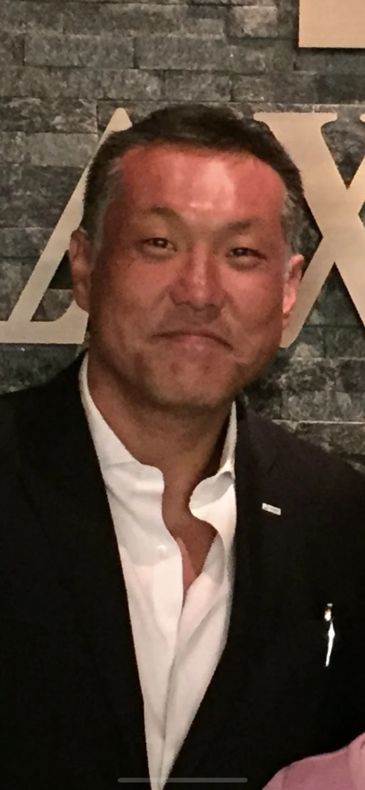

生活の基盤が定まらない
住まいがないと、就労・通院・行政手続きも不安定になります。まず生活の基盤を整えることから考えます。
私たちについてABOUT US

安心して眠れる場所がある。
そこから、暮らしを立て直す一歩が始まります。
社会課題 ISSUE
住まいがないと、就労・通院・行政手続きも不安定になります。まず生活の基盤を整えることから考えます。
不安や偏見の中で、支援にたどり着けない方もいます。安心して話せる関係づくりを大切にします。
申請や関係機関との連携まで含めて支え、必要な制度を日々の暮らしにつなぎます。
REPRESENTATIVE MESSAGE

一人ひとりに合った再出発の環境を整えること。それが、ルミライズの想いです。
住まい・制度・就労・定着を一体で考え、暮らしの立ち上げから、その後の生活まで支えます。
株式会社ルミライズ
代表取締役CEO 田中 秀泰
代表の田中秀泰は、2013年に相模原ダルクの活動を開始しました。そこで培った経験をもとに、2021年設立の株式会社ルミライズでは、住まいを起点とする支援に取り組んでいます。
住まいを用意するだけでは、孤立や困難が続いてしまう方がいます。就労や就労準備を通して仲間と触れ合い、共同体の中で「自分は必要とされている」と感じられること。それが暮らしの立て直しにつながり、出所された方の再犯防止にも大切だと考えています。
ルミライズの現在の主軸は、相模原ダルクに通所する約60人の利用者のナイトケアハウス運営です。田中が代表を務める一般社団法人相模原ダルクは、地域で10年以上にわたり、多くの方の一般就労を支えてきました。
お弁当・惣菜販売や無農薬野菜を主軸とする農業の就労支援事業、外部の就労サービスへの紹介に加え、月1回の家族会も行っています。お子さまのケアや、家庭内で抱える問題にも向き合い、ご本人とご家族を支えています。
COMPANY